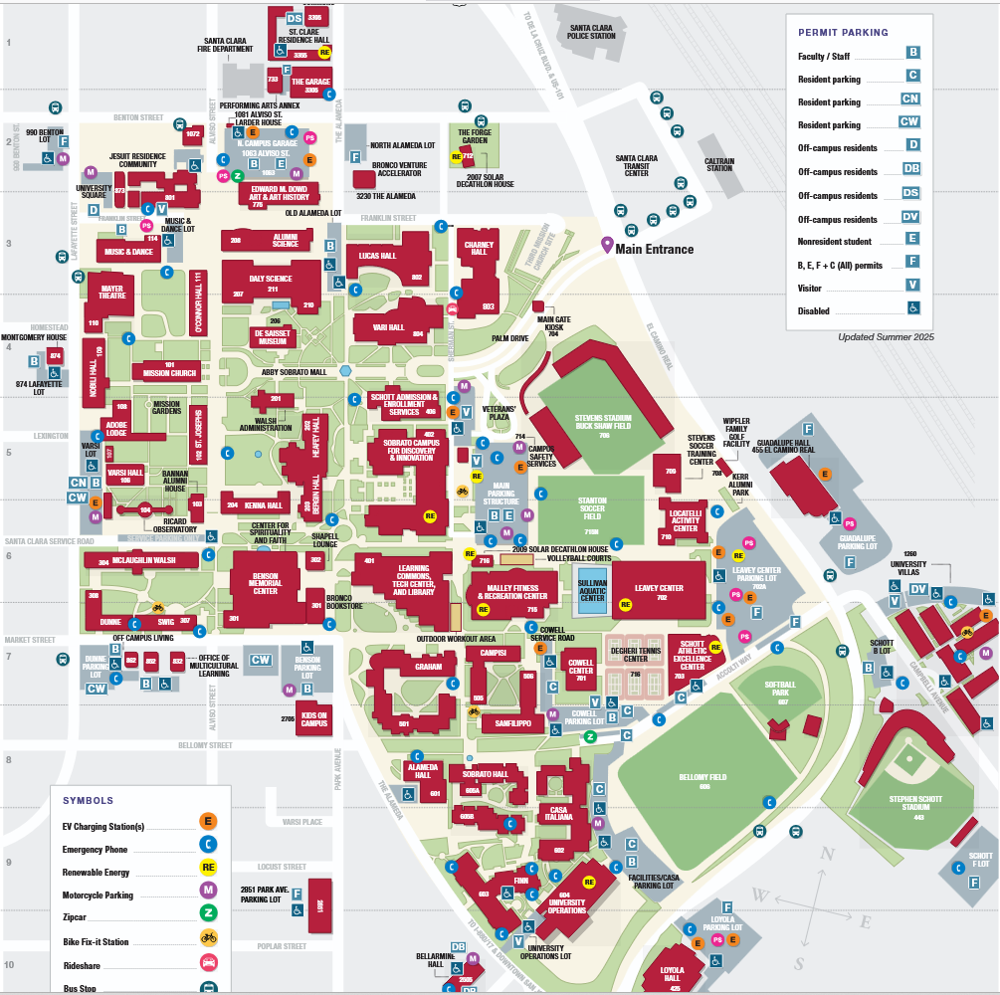

Santa Clara University
A shared board for reporting Sebastian seen on or near campus. Only make informed reports Please!
Tap anywhere on the campus map to post a sighting there right away.

Positions are approximate. Reports fade from green to red as they age and clears after 2 hours.
Newest first.
Reports are anonymous and remove themselves after 2 hours. For an immediate threat, contact Campus Safety or local police directly.
This posts on its own, separate from any pin on the map — add a short description and/or a location.